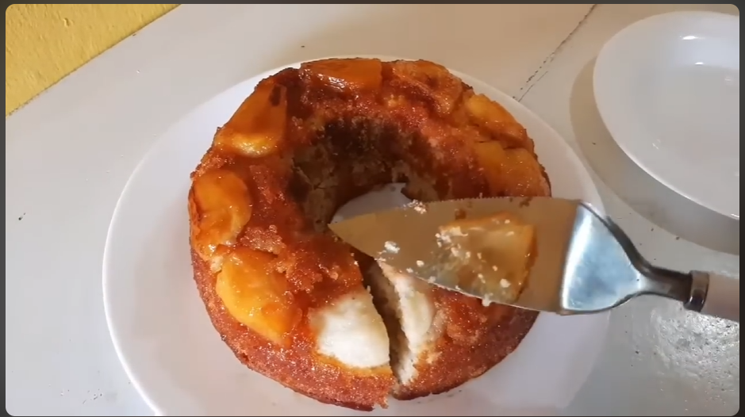

Bolo de jaca
Uma receita diferentona usando uma fruta pouco amada pela população....nessa receita
procuramos usar a criatividade ao fazer um bolo delicioso (kkkkk) usando Jaca.
PS: Não nos responsabilizamos por eventuais problemas intestinais ou idas ao hospital por experimentar essa iguaria. Pois não temos dinheiro para indenizações.

Ingredientes
- 3 ovos
- 2 xicaras de açúcar.
- 3 xícaras (chá) de jaca sem caroço.
- 1 copo americano de jaca sem caroço para fazer o suco concentrado.
- 1 copo de água para fazer o suco concentrad.
- 3 colheres (sopa) de açúcar refinado para polvilhar n forma.
- 1 colher (sopa) de fermento em pó para bolos.
- 3 xícaras (chá) de farinha de trigo.
- 1 copo (250 ml) de suco concentrado de jaca.
- 1 colher (sopa) de extrato de baunila.
- 150 gramas de manteiga ou aproximadamente 4 colheres (sopa).
Modo de Preparo
- Untar a forma com manteiga e açúcar. Adicione as jacas sem caroço preenchendo todos os espaços.
- Bata o copo de jaca e água no liquidificador para fazer o suco concentrado.
- Bata a manteiga com açúcar em uma batedeira por 2 minutos. Ligue o forno.
- Acrescente os ovos e a baunilha na batedeira e continue batendo.
- Adicione o suco de jaca e a farinha de trigo aos poucos e continue batendo.
- Por fim adicione o fermento e mexa com uma colher à mão até ficar homogêneo.
- Leve ao forno por aproximadamente 40 minutos e teste com o palito até ficar no ponto.
Porções: 12 pedaços
Tempo de preparo: 60 minutos
Créditos pela receita no site : Tempero e Fogão
Créditos pela imagem no vídeo: Receitas da Maria (minuto 8:37)